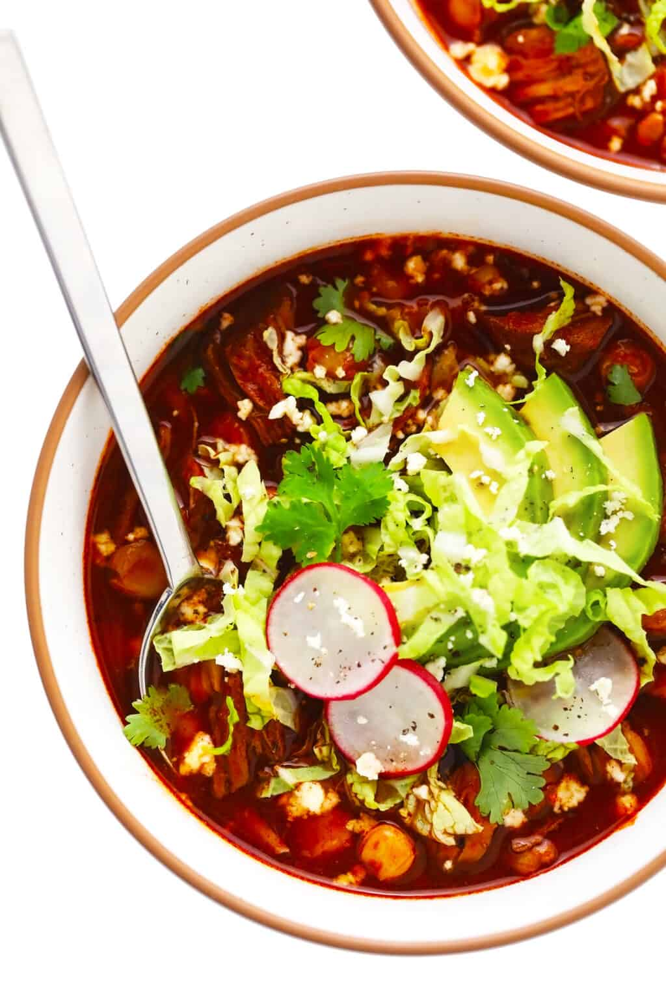

Pozole Rojo
Traditional Mexican stew made with meat, hominy, chile peppers, and various
seasonings.

Ingredients
- Pork
- Water
- Garlic
- Seasonings
- Tomato & Guajillo Chiles
- Hominy
- Toppings
Cooking Steps
-
Boil, then simmer pork with garlic and salt until the meat is cooked enough
- Boil tomatoes and chiles toegether. Drain.
- Blend tomato and chiles with salt, garlic, oregano, cumin, and water.
- Shred pork, then discard bones and garlic.
-
Stir sauce and pork into the pot, then simmer until flavors have melded.
- Ladle pozole into bowls and finish each serving with toppings.
- Enjoy with a smile!